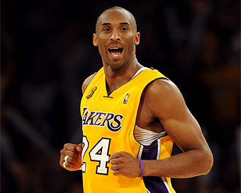

Los 3 mejores jugadores de la NBA
| Michael Jordan |
- Nacimiento: 17 de febrero de 1963
- Fecha De Honramiento: 2009
- Draft de la NBA: 1984
- Compañeros de equipo: Scottie Pippen, Magic Johnson
|

|
| Kobe Bryant |
- Nacimiento: 23 de agosto de 1978
- Fallecimiento: 26 de enero de 2020
- Draft de la NBA: 1996
- Medallas de oro: Torneo masculino de baloncesto en los Juegos Olímpicos de Londres 2012
- Compañeros de equipo: LeBron James, Kevin Durant
- Premios: Premio al MVP de la Temporada de la NBA
- Nominaciones: Premio ESPY al Mejor Jugador de la NBA
|

|
| Acronimos importantes |
- Nacimiento:
- 14 de marzo de 1988 (edad 35 años)
- Fechas de ingreso:
- 2022
- Draft de la NBA:
- 2009
- Altura:
- 1,88 m (6' 2")
- Equipo:
- Golden State Warriors
|

|